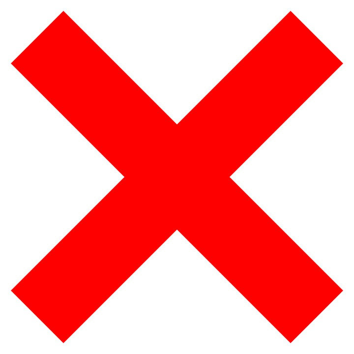

Air Jordan 1 SHATTERED BACKBOARD 3

AJ1 SHATTERED BACKBOARD 3
Cena: 260€
Farba: Black/Pale Vanilla-Starfish
Dátum vydania: 26/10/2019
Počet kusov: 46 ks
Dostupnosť: Skladom
- 38 - Nedostupné
- 39 - Nedostupné
- 40 - Nedostupné
- 41 - Dostupné

- 42 - Dostupné
- 43 - Dostupné
- 44 - Nedostupné
Popis produktu
Asi väčšina z nás už vie príbeh Shattered Backboard-ov, no pre tých,
čo prespali posledné 4 roky ich releasov a nežili v roku 1985 aby si pamätali akt,
podľa ktorého dostali názov, si tu teraz rozpovieme ich legendárny príbeh.
Písal sa rok 1985, Michael Jordan mal za sebou už svoju prvú rookie sezónu a tak si odbehol na
exhibičný zápas do Talianska. Michael, chlapík vysoký a pomerne mohutný, sa vo víre hry
rozhodol zavesiť dvojkový dunk snáď už od šestkovej čiary cez svojho protivníka.
Všetko by bolo poriadku, ibaže v tomto prípade nebolo. Michael zavesil taký dunk, že so sebou strhol celú obruč a spolu s ňou samozrejme aj sklo,
ktoré sa hneď rozsypalo na jeho spoluhráčov aj protivníkov.
Pôvod názvu “Shattered Backboard” by sme mali.
Odkiaľ pochádzaju ich konkrétne farby? Celkom easy. Boli to farby dresu, ktorý mal Jordan v tomto zápase na sebe. Čierna, biela, oranžová.
Teraz už celkom ikonické farby, ktoré zdobia jednotky. Okrem iného, tieto farby indikujú určite aj určitú úroveň hypu.